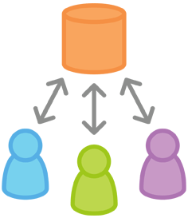
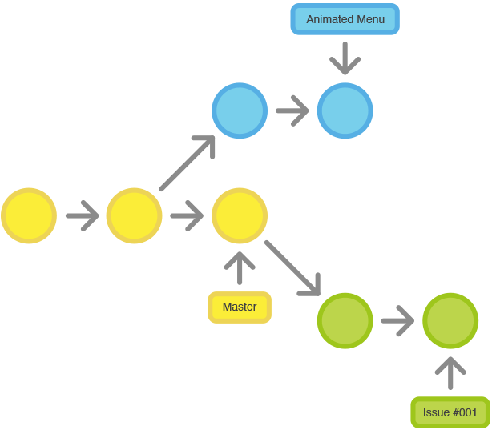
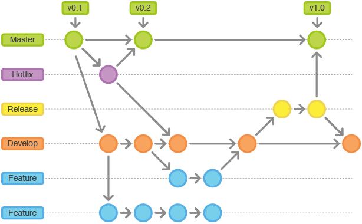
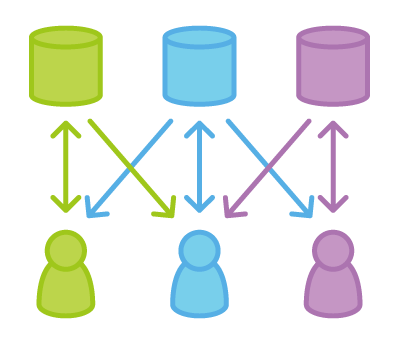
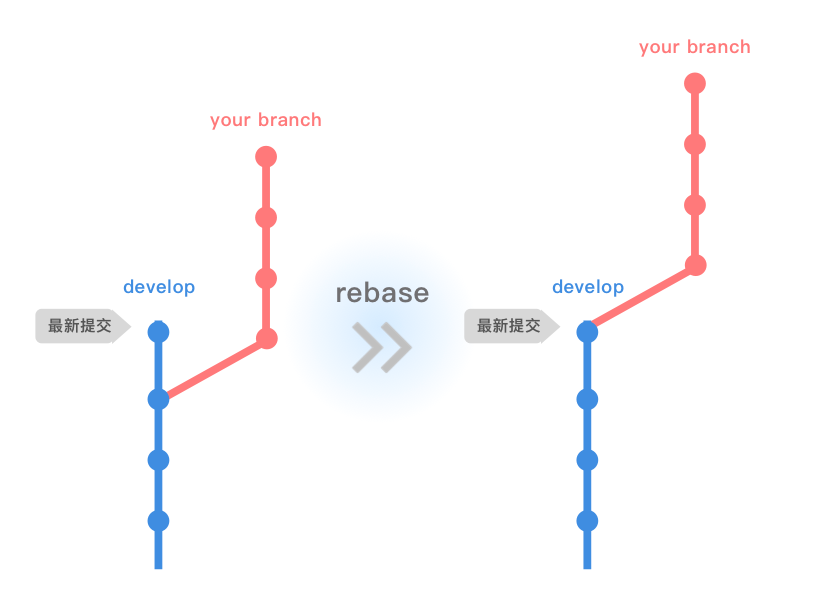
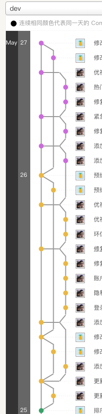

前言
Git 工作流有各式各样的用法，但也正因此使得在实际工作中很难上手。本文中的几种工作流是作为方案指导而不是条例规定。在展示了各种工作流可能的用法后，你可以从不同的工作流中挑选或揉合出一个满足你自己需求的工作流。
工作流
Git 工作流可以理解为工作中团队成员遵守的一种代码管理方案，在 Git 中有以下几种工作流方案作为方案指导：
- 集中式工作流
- 功能开发工作流
- Gitflow 工作流
- Forking 工作流
集中式工作流

这种工作方式跟 svn 类似，它只有一个 master（trunk）分支，开发者会先把远程的仓库克隆到本地，之后的修改和提交都在本地操作，直到在某个合适的时间点将本地的代码合入到远程 master。
这种工作流比较适合小团队，也是绝大部分小团队刚入门 git 的选择，因为小团队可能不会太多的协作和合流的动作，一条路走到黑也无所谓，在这里不做过多阐述。
功能开发工作流

这种工作流关注功能开发，不直接往 master 提交代码，保证它是稳定并且干净的，而是从 master 拉取 feature 分支进行功能开发，团队成员根据分工拉取不同的功能分支来进行不同的功能开发，这样就可以完全隔离开每个人的工作。
当功能开发完成后，会向 master 分支发起 Pull Request，只有审核通过的代码才真正允许合入 master，这样就加强了团队成员之间的代码交流，也就是我们常说的 Code Review。
Gitflow 工作流

这个工作流会相对复杂一点，但它非常适合用来管理大型项目的发布和维护。贯穿整个开发周期，master 和 develop 分支是一直存在的，master 分支可以被视为稳定的分支，而 develop 分支是相对稳定的分支，特性开发在 feature 分支上进行，发布在 release 分支上进行，而 bug 修复则会在 hotfix 分支上进行。
Forking 工作流

Forking 工作流对于开源项目贡献者一定不陌生了，它有一个公开的中央仓库，其他贡献者可以 Fork 这个仓库作为你自己的私有仓库，开源项目维护者可以直接往中央仓库 push 代码，而代码贡献者只能将代码 push 到自己的私有仓库，只有项目维护者接受代码贡献者往中央仓库发起的 pull request 才会真正合并代码。
Gitflow (Simple) 工作流
上面已经大致讲了在 git 当中的四种比较常见的工作流，都是需要开发者去实践理解的。
我所在的 iOS 开发组，从一开始使用集中式工作流，每个人都是在 master 分支上，一直只重复着三个命令，pull、commit、push，没有第四个命令。
后来，开始按模块分工合作，于是慢慢偏向功能开发工作流，每个人建一条分支，不过还没有使用 pull request，而是 master 分支主动去 pull 其他分支的代码。
再后来，觉得这种方式也还不够满足需求，项目网络也是一塌糊涂，经过多番探讨，还是有必要走 Gitflow 工作流，但是，项目又还没真的有那么大，团队人数又还很少，标准的 Gitflow 实在是有点杀鸡焉用牛刀。
几番揉捏，总结出适合我们需求的 Gitflow (Simple) 工作流。
分支
|
|
- master 分支用于发布，取消了 release 分支。
- dev 分支作为开发的总分支。
- 开发者个人分支包含了模块 feature。
- 取消了 hotfix 分支，bug 在开发者分支修复后 merge 到 dev，最后从 dev merge 到 master。
所有分支都常驻，不需要删除。
工作方式
说白了，其实就是在功能开发工作流上增加了 dev 分支，除了新增的 rebase 操作和 merge 稍微有点不一样之外，其他都跟功能开发工作流一样。
下面举一个例子，来说明 Gitflow (Simple) 工作流的工作方式。
假设现在有两个开发者 bingo 和 lnz，那么应该有四条分支：master、dev、bingo、lnz。
现在 bingo 开始开发支付功能，写了4天，每天都往自己的分支上提交并 push 到 bingo 分支；lnz 开始开发注册登录功能，写了2天，每天也都往自己的分支上提交并 push。
时间过了两天，lnz 已经开发完登录功能了，而 bingo 按照计划只完成了一半。此时，dev 和 master 依然没有新的 commit，lnz 需要 merge 代码到 dev 里。
- checkout 到 dev 分支
|
|
- merge lnz into dev
|
|
- push 到 dev
|
|
- checkout 回 lnz 分支
|
|
- rebase dev
|
|
- push 到 lnz
|
|
到这里 lnz 已经完成 merge 的所有操作，开始做其他功能。时间又过了两天，bingo 完成了支付功能，此时他也要 merge 代码到 dev 里。
由于 lnz 之前已经往 dev 远程分支上推了代码，所以按照惯例需要先 pull dev 最新的代码。
|
|
- 然后进行 merge
|
|
- push 到 dev
|
|
- checkout 回 bingo 分支
|
|
- rebase dev
|
|
- push 到 bingo
|
|
这样一来，bingo 也完成了 merge，之后每个人都是按照这个操作流程一直循环下去，即 checkout -> (pull) -> merge -> push -> checkout -> rebase -> push，直到 dev 上成熟了，再 merge 到 master 并打上 tag，就是我们简单版的 Gitflow 工作流了。
注意
no-fast-forward
-no-ff 指的是强行关闭 fast-forward 方式，终端默认是以 fast-forward 进行 merge，这不是我们想要的。
fast-forward 方式就是当条件允许的时候，git 直接把 HEAD 指针指向合并分支的头，完成合并。属于“快进方式”，这种情况如果删除分支，则会丢失分支信息，因为在这个过程中没有创建 commit。
而关闭 fast-forward 就会生成一个新的 commit，当然这就会导致 merge 后 dev 的 commit 会比个人分支多一个，也就需要 rebase。
不要反向拉取代码
merge 代码到 dev 后，由于使用了-no-ff， dev 上的提交会比个人分支上的多一个，这个时候，千万不要从个人分支上反向 merge 进自己的分支，原因有两个:
merge 会导致你的分支都会引入一个外来的合并提交。如果 develop 非常活跃的话，或多或少会污染你的分支。
丑，Network 复杂，增加理解项目历史的难度。
rebase
如何解决当前 dev 有更新的情况？回答：使用 rebase。
rebase 用中文直译就是“变基”。

rebase 在进行时，需要选择一个 commit 点，将当前分支从根基整个移到指定 commit 点，名副其实——变基。
这样既可以得到一个好看的 Network，又可以及时控制冲突。不过在多人开发中需要多关注 dev 的情况，及时 rebase，避免长时间不更新代码突然 rebase 到最新后发现了大量冲突。当然，控制和分配比较好的项目本身也很少产生冲突。
效果

后话
关于 git 工作流，只有选用最合适自己团队的工作流才能有效的提高开发效率，上面提到的一些工作流模式都有各自的适用场景，如何选用适合自己团队的工作流得结合团队成员的实际情况，看团队成员对于工作流的理解程度，还有对于工作流的执行程度。